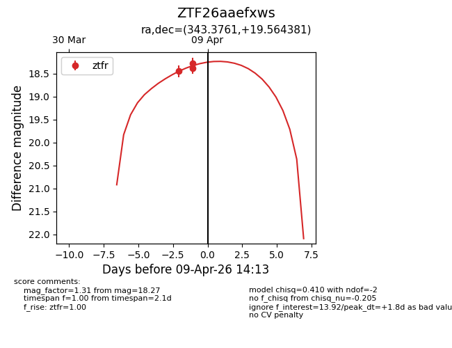
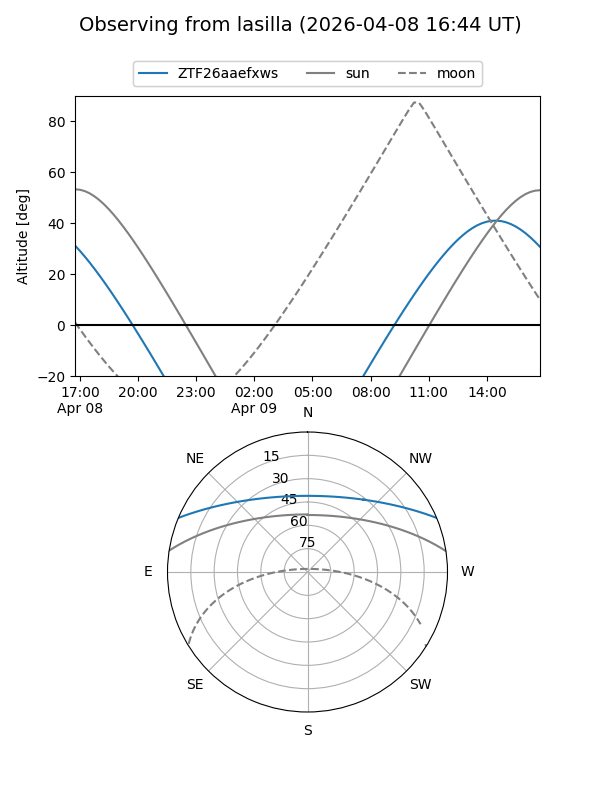
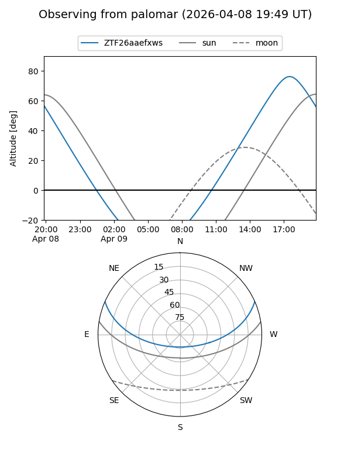
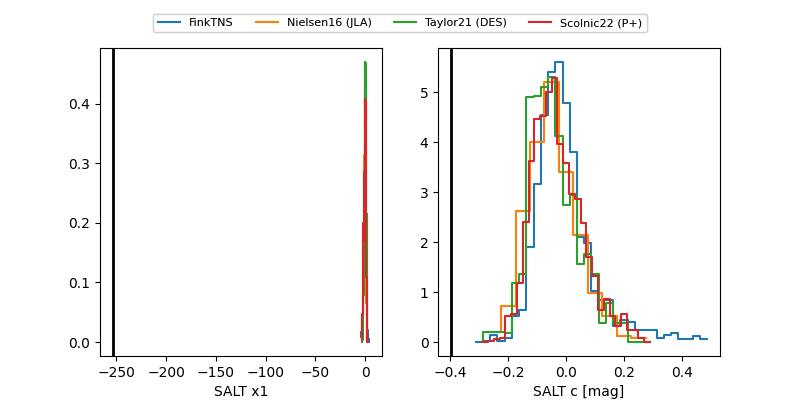

ZTF26aaefxws
Target ZTF26aaefxws at 2026-04-09 14:19
Aliases and brokers:
FINK: link
Lasair: link
ALeRCE: link
alt names
ZTF26aaefxws (ztf,fink_ztf)
Coordinates:
equatorial (ra, dec) = 343.3761,+19.56438
equatorial (HMS+DMS) = 22:53:30.26,+19:33:51.77
galactic (l, b) = (88.3236,-35.26165)
Flags:
Photometry:
last ztfr=18.27
3 ztfr detections
Lightcurve

Visibility


Additional plots
